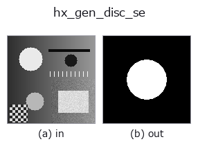

halcon_ext op• 数据种类:image → region
• 调用:fullseye.apply(img, "hx_gen_disc_se", a=0.5, b=0.5)(2-D 的模型是一张图 + 两个标量旋钮 a,b∈[0,1])
• HALCON 对应:gen_disc_se(其含义与参数可参考 HALCON 手册)

*图为在 128×128 合成输入上实际运行的输出。左为输入，右为输出。点云以俯视散点显示(亮度 = z)，一维序列为折线，体数据为沿 z 的最大值投影，视频为中间帧，复数图像为幅值；无法成像的返回值直接显示数值。*
扫描旋钮 a(0.1 / 0.5 / 0.9，另一旋钮取默认):
▸ hx_gen_disc_se: knob a sweep (docs site)
*旋钮 b 不改变输出(实测: 0.1 / 0.5 / 0.9 相同)。*
换别的图像(合成场景 / 照片 / 硬币。上排为输入，下排为对应输出。旋钮取默认):
▸ hx_gen_disc_se: other inputs (docs site)
*第 4 列是彩色 (H,W,3) 输入。此算子能正确处理颜色而不跨通道(不把颜色通道当作第三个空间轴卷积)。*
生成圆盘结构元素作为 region(半径 a)。
> 以下的详细说明为原文 —— 摘要与标题已翻译。
入力 `v は画布の形状のためだけに使い、画像中心 ((h-1)/2, (w-1)/2) から半径 r` 以内の画素を 1 とする
円板を 0/1 の float 配列(region)で返す。
• `a → 半径 r = (0.05 + 0.35*a) * min(h, w)`(短辺の 5%〜40%)。
• `b` は未使用。
名前は「構造要素」だが、この op が返すのは画像と同じ大きさの region であり、`hx_erosion1` などが内部で使う
小さなカーネルではない。中心固定の円 region が欲しいときの生成器として、`hx_gen_circle`(半径 10%〜50%)の
小径版にあたる。他の region と重ねて ROI を作るのに使う。
• 示例数据目录(下载 URL / 许可证) —— 2-D 用 skimage.data(BSD/公有领域)加合成图,3-D 给出真实数据源(Stanford/PDS 等)的下载 URL。
• 算子来历与参考文献 —— 该算子族所依据的研究/方法出处。
• 算法的正典(作者・年份)与用途见上面的族使用指南。
下面的程序已确认可以运行(与图相同的输入)。在 Studio 帮助中，此块会变成按钮，可当场加载并运行。
hx_gen_disc_se 0.50 0.50
▸ Load this pipeline · Load & run
• gallery2d_halcon_ext — py -3.11 examples/gallery2d_halcon_ext.py
region 作为输入)identity · reg_erode · reg_dilate · reg_open · reg_close · fill_holes · select_largest · remove_small
halcon_ext)hx_gen_circle · hx_gen_ellipse · hx_gen_rectangle2 · hx_gen_checker_region · hx_gen_grid_region · hx_gabor · hx_fit_surface1 · hx_fit_surface2
*Provenance: ops.py — 2D 算子登记表。本条目由 tools/opdocs.py md 自动生成(请勿手工编辑)。*
© 2026 Kazufumi Furuse — Fullseye operator documentation. Licensed under Apache-2.0.
{kind=link}
{kind=link}